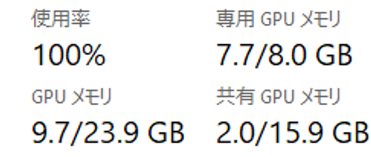
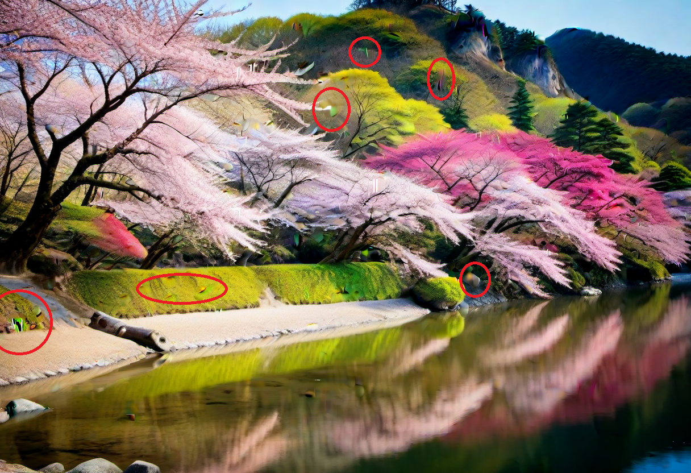

【限界突破】RTX 2070 Superで挑むAI画像生成の話 VRAM8GBが重すぎた
どうも皆さんこんにちは！ ブログを書いたりゲームをしたりに明け暮れているnyakorです。AI画像生成に興味があったので手元のPCでAI画像生成（Stable Diffusion / Forge）を始めました。
しかし、僕のPCをグラフィックボードのNVIDIA GeForce RTX 2070 Super （VRAM 8GB）は、最新のグラボに比べればもはや「一世代前の戦士」です。この限られたリソースで、いかにして
第1の罠：「8K」という呪文とVRAMの爆死
AI画像生成を始めたばかりの人は多分必ずかかる罠があります。それは8Kという名の罠です。最高の画質を求めて僕は8K high qualityと打って生成ボタンを押した瞬間PCに異変が起きました。なんと通常10秒ほどで終わる画像生成がなんと8K high qualityと打ったせいで30秒に伸びました。しかもPCの音がまるでジェット機でした。タスクマネージャーを開くと驚きの光景が↓

(いつもこうだけど時間と温度は上がってた)
教訓1: VRAM8GB以下勢にとってプロンプトでの8K指定はただの自爆コードである。(プロンプトを読むのはAIなので8K指定で絶対重くなるわけではないです。)
第2の関門： 細部の崩壊
次に僕を悩ませたのはAIによる細部の崩壊です。例えばぱっと見ると綺麗な桜と川の画像です。

奥のところだったりがグチャってしてたり色が混ざってたりしますよね。やっぱリアルな画像を作りたいので設定を調節したりしました。
成功の兆し: たくさん作ることによりマシな写真が出来た
50枚の中からやっと納得のいく画像ができました。 東方projectの霊夢さんです。
いつもどこを見て選んでるかというと絵の崩壊がないことと色が不自然じゃないこと、あとはより詳しく見てぼやけてるところがないかとかです。これをクリアできる絵って100枚に数枚なので見逃さないように見ていきます。
VRAM8GBで生き残るための方法
ここで、僕と同じように低〜中スペックのグラボでAIを楽しみたい、という人のために、僕が編み出した軽くて綺麗を作る方法を紹介します。
1.512×512で当たりが出るまで生成する
最初から高解像度だと効率が下がるし電気代も上がるので少ない解像度でやりましょう。
アップスケールはあとで実行する
生成と同時に高解像度化するHires. fixは重すぎます。生成後にExtrasタブで拡大する方が圧倒的にVRAMに優しくて軽いです。
最初は設定の調節から！
僕は最初は元の設定でやっていたのですが、設定を変えたら時間が30秒から15秒くらいまで減りました。時間が減ると効率も上がるので設定は調節しましょう。下におすすめの設定とかモデルとかを紹介する記事のリンクを張るので見てみてください。
ということでどうだったでしょうか？霊夢の絵綺麗だったですよね。VRAM8GBでも以外とできるみたいでよかったです！では見てくれてありがとうございました！よい一日にを！

VRAM 8GBのRTX 2070 SuperでStable Diffusion／Forgeを使ったAI画像生成の体験記です。負荷のかかる設定の罠、VRAMを節約するヒントなどを紹介します。

webUI内で高速化＆高画質化する設定を8個紹介しています。VRAM８GBでも賢く画質を落とさずに高速化していきます。設定を変えると数秒早くなって効率が上がるのでチェックしてください！
ホームに戻る